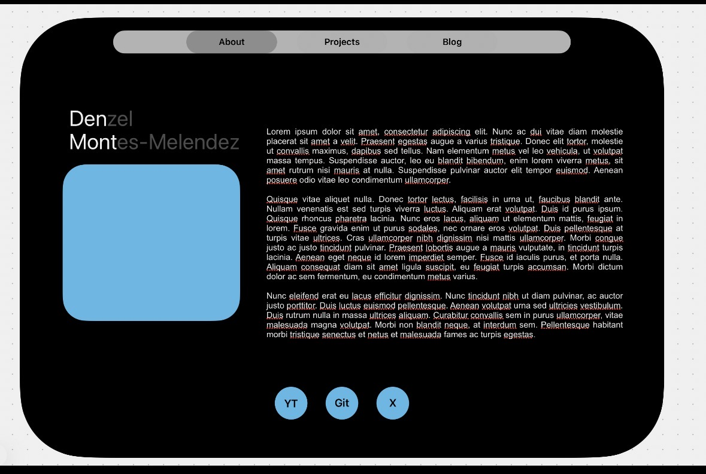
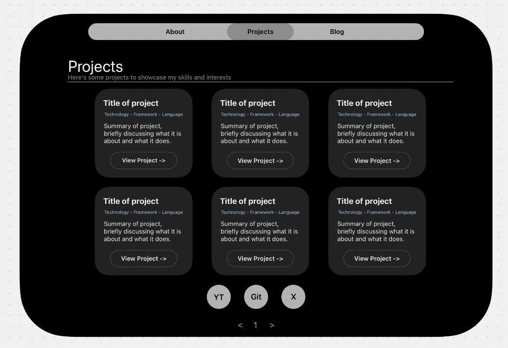
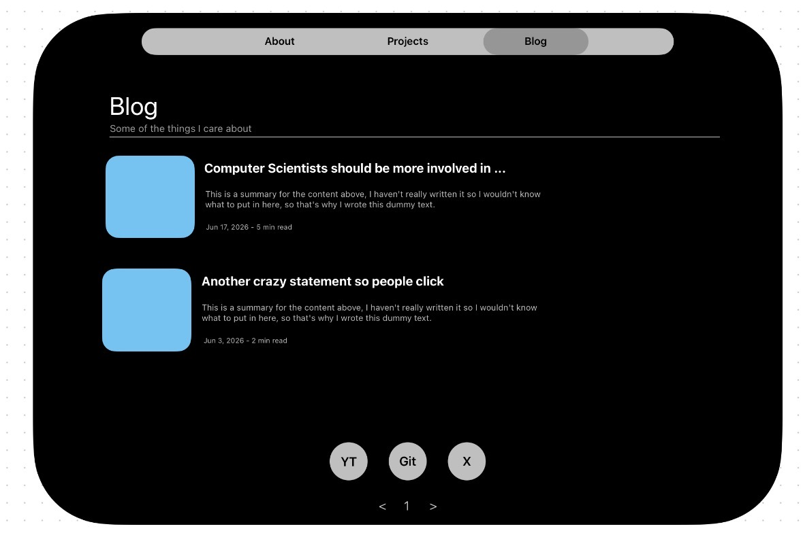

Hello there!
Before I move on to publishing old and new projects, I thought it would be nice to have an entry describing how I made my portfolio and the thought process behind it. It is quite simple, so I will divide this into three sections: Design, Tech Stack, Implementation.
Design:
As I wanted to keep my portfolio as simple as possible, I used Freeform to explore what I could create using only its original basic shapes. It is undeniable that I leaned toward Apple's minimalist design philosophy for the UI. The goal was to build something elegant with a simple visual language that anyone could use intuitively after a few interactions. Here are the original mock-ups for the design:



Although they are very similar to the final version, the easiest difference to spot is the font. I ultimately chose EB Garamond because I'm an avid reader and a long-time subscriber to The Economist. It was the closest free-to-use font I could find to the one they use and it really makes the blog entries and About section feel closer to reading an essay or magazine than a software portfolio. For the icons, I used free versions that matched the looks I was going for on Hugeicons.
Another, (slightly more difficult to spot) difference is the color palette I ended up using. My intention with these was to maintain a set of neutral colors, with a few eye-catching ones where I thought the contrast could make the content easier to read. Since the beginning I wanted to avoid using vibrant colors or animations, and keep this static so the content could resonate best. For the sake of making this easier to read, here they are:
#000204Primary background#E8E8F3Controls, secondary text, metadata, and social buttons#6F6F73Hover and selected-navigation states#202020Project cards#9ECAE1Accent and keyboard focus color#FFFFFFPrimary text#000000Dark text on light controls
As a final thought, I'd like to explain that I chose to begin with this section because I believe visuals in software matter. While functionality is important for obvious reasons, thoughtful design is just as important. Software that is both functional and visually appealing is more likely to resonate with its users and leave a lasting impression.
Tech Stack:
As I'm trying to save as much video-game money as possible, this begins with getting the very simple domain you're in (props to Mr. Delimarsky for beating me to den.dev) and hosting everything on Vercel (I know, though it is best suited to what I need for this portfolio). The stack is plain HTML, CSS and JavaScript.
Now, why go for a static HTML/CSS/JS portfolio and not make use of the many different frameworks out there? It is quite simple actually: there is no need for one yet. Maybe if I keep the habit of rambling in here I can change my mind and make this specific section dynamic, but for the moment, this is all that's needed.
Implementation:
Though I really should add this to this project's README.md, heres the project's folder structure:
denmont.dev/
├── assets/
│ ├── images/
│ │ └── profile.jpeg
│ └── icon.svg
├── blog/
│ └── index.html
├── posts/
│ ├── assets/
│ │ ├── first-post/
│ │ │ └── thumbnail.jpg
│ │ └── making-of-port/
│ │ ├── about-mockup.jpg
│ │ ├── blog-mockup.jpg
│ │ └── projects-mockup.jpg
│ ├── first-post/
│ │ └── index.html
│ └── making-of-port/
│ └── index.html
├── projects/
│ └── index.html
├── components.js
├── index.html
├── styles.css
├── LICENSE
└── README.mdAs you can see, this is a very simple static site that has it's assests (The images I use) under /assets, and three home pages named index.html, one which is the default About me page, and one for both the /blog and /projects sections under their folders. The blog entries are stored on /posts, with it's respective assets under that folder.
Among the few things worth mentioning are the components.js file, which contains the navigation bar and footer as custom HTML elements, so I can reuse them on every page instead of copying them around. It also checks the current URL to highlight the section you're in. On styles.css I use CSS variables for the colors and rounded corners and a mix of Flexbox and Grid to organize each page. A media query changes those layouts once the screen gets small enough. The About page becomes a single column, the project cards stack vertically, and the blog entries get smaller images. There is no separate mobile site or JavaScript moving things around, it is still the same HTML responding to the available space.
Finally, every section and blog entry has its own folder with an index.html file. This keeps the URLs clean and makes adding a new post fairly simple: create its folder under /posts, place any images under /posts/assets, and add the entry to the Blog page. There is no build step in between; once the changes are pushed, Vercel serves the files as they are. That's really all there is to it.
Note: The views expressed here are my own and do not represent those of any past, present, or future employer.